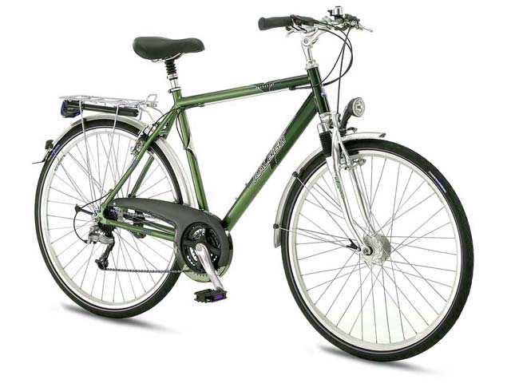

El invento de la bicicleta fue un invento europeo. Y existe la creencia de que Leonardo Da Vinci creó el primer boceto en papel de una bicicleta a finales del siglo XV, pero el investigador alemán Hans-Erhard Lessing demostró en 1997 que el diseño se introdujo en los documentos de Leonardo a partir de 1961. También a finales del siglo XVIII, un francés, el conde de Sivrac habría inventado el celerífero, un primitivo cuadro sobre dos ruedas con una cabeza de animal, pero autores como Max Rauck, Gerd Volke y Felix Paturi han desmentido esta fecha atribuyéndola a antiguas rivalidades nacionalistas entre franceses y alemanes.
A continuación la evolución de la industria:
En 1816, Karl Dreis creó lo que sería el primer vehículo dirigible con dos ruedas en linea. No tenía ni pedales, ni cadenas, ni frenos, sino que avanzaba y frenaba con los pies. Sele conoció como:"Draisiana"
En 1839 el herrero escocés Kirkpatrick Macmillan añadió pedales con barras a un prototipo. Estas innovaciones permitieron al ciclista impulsar la máquina con los pies sin tocar el suelo. El mecanismo de impulsión consistía en pedales cortos fijados a la rueda trasera y conectados por barras a unos pedales situados delante del ciclista.
En 1845 el escocés Robert William Thomson sustituyó las ruedas hechas completamente de madera por unos neumáticos inchables que combinaban cuero y goma, y cuyos remaches le daban tracción al conjunto, aunque su invento cayó en desuso y solo se usó durante algunos años en carruajes.
En 1861, Ernest Michaux decidió dotar de unos pedales a la rueda delantera de una vieja draisiana, por lo que el nuevo invento requería de más equilibrio.
En 1869, en Gran Bretaña se introdujeron los neumáticos de goma maciza montados en el acero
En 1873 James Starley, un inventor inglés, produjo la primera máquina con casi todas las características de la famosa bicicleta de rueda alta. La rueda delantera de la máquina de Starley era tres veces más grande que la de atrás.
En 1885, John Kemp Starley crea la “bicicleta de seguridad” muy parecida a una bicicleta urbana actual. Tenía frenos y la postura era mucho más cercana al suelo, de ahí su nombre.
El 31 de mayo de 1889 nació oficialmente el ciclismo de competición. Los hermanos Olivier , asociados de la fábrica de Michaux
Aplicacion Tres, DGM
UTLIZACIÓN COMO MEDIO DE TRANSPORTE
Ventajas:
Ayuda al funcionamiento del sistema cardiovascular, tonifica los músculos y mejora la capacidad pulmonar.
Reduce los niveles de colesterol en la sangre.
Ayuda a mejorar la coordinación motriz.
Es un excelente ejercicio aeróbico que combate los riesgos de sufrir sobrepeso y obesidad.
Aplicacion Tres, DGM
TIPOS DE BICICLETAS
Bicicleta de Ruta:
Son bicicletas orientadas a obtener velocidad en pavimento, de construcción más ligera que otras bicicleta, están dotadas con ruedas más grandes, delgadas y provistas de llantas angostas y con dibujo liso. Las bicis de ruta utilizan manubrios drop-bar para lograr una postura más aerodinámica.
Bicicletas Urbanas
En este caso nos referimos como bicicleta urbana a las bicis estilo holandés (Dutch).
Estas bicicletas fueron concebidas para la ciudad, por lo que son de construcción bastante solida tanto en su cuadro como en sus ruedas. Están perfectamente adecuadas para soportar las condiciones de una ciudad (baches, banquetas, topes, etc.)

Bicicletas Fixies
Si bien su concepto es el de ser una bicicleta sencilla, se han convertido en algo así como las bicicletas de culto para el ciclismo urbano. Su principal característica es su diseño simple y en muchos casos minimalista, sumamente eficientes y funcionales.
Esta familia de bicis viene en varias formas y estilos; las hay con manubrios rectos, de doble altura, drop bars, bullhorns, etc.
Están equipadas con una sola velocidad por lo que requieren mucho menos mantenimiento que otras bicicletas. La diferencia entre las single-speed y las fixies es que en las single-speed utilizan una rueda libre, mientras que las fixies utilizan un piñón fijo.
Bicicleta MBX
Las BMX utilizan cuadros pequeños y resistentes, ideales para saltos y acrobacias. Existen diferentes variables de estas bicicletas, algunas con llantas anchas para usarse en terrenos sueltos y otras con llantas un poco más delgadas y lisas para usarse en rampas o en la calle. Estas bicicletas no son eficientes como medio de transporte.
Bicicleta A-bike
La A-bike es una bicicleta plegable creada por Sir Clive Sinclair (inventor del ZX80 y el ZX81) en el Reino Unido y publicada el 12 de julio de 2006. Pesa 5,5 kilogramos y plegada ocupa un espacio de 67x30x16 cm, lo suficientemente pequeña para llevarse en una mochila.
La A-bike fue diseñada por un equipo en Daka, Hong Kong and Sinclair Research tras 5 años de investigación, y fue originalmente anunciada en 2004. Clive Sinclair ideo el concepto de la A-bike y Alex Kalogroulis fue su principal ingeniero de diseño. Su aspecto es parecido a los patinetes infantiles de dos ruedas.
Aplicacion Tres, DGM
5 MARCAS IMPORTANTES DE BICICLETAS
"Las 5 mejores Bicicletas"
1. Canyon
Desde 1966, Canyon ha ido ganando un puesto como una de las mejores marcas de bicicletas de montaña del mercado, aunque cuentan también con una línea para asfalto.
Sin embargo, desde comienzos del 2000 hasta ahora, y gracias a su gama Bicycles GmbH, Canyon se ha posicionado como una de las marcas de bicicletas más demandadas para terrenos montañosos y mejor vendidas en la zona de Alemania. A esto último ha contribuido especialmente la venta por Internet, que ha permitido a los clientes obtener una bicicleta personalizada, acorde a sus necesidades y preferencias.
2. Specialized
Aunque en los comienzos, esta compañía se dedicaba a la producción de bicicletas de estructuras no especializadas en ningún tipo de terreno; con el tiempo y tras un cambio de dueño, comenzaron a fabricar modelos para circular en montaña.
3. Trek
Con sede en Estados Unidos, Trek Bicycle Corporation es una de las marcas más extendidas por todo el globo, con puntos de distribución en hasta 80 países.
Competidora con Specialized, las Trek disponen de una amplia variedad de bicicletas para cada modalidad y permiten al cliente personalizar el cuadro de las mismas, en función de su altura y peso, un servicio del que únicamente disponen las mejores marcas de bicicletas.
4. Megamo
Tal vez no sea de las marcas de más renombre, pero Megamo cuenta con bicicletas bien armadas para diferentes tipos de terreno montañoso. En este sentido, destacan las líneas Track, Factory, XR, XC, Huke Plus, Natural, Sport o Fat.
5. Cube
Las mountain bike de Cube se sirven de las tecnologías más punteras en el empleo de fibras de carbono con menos proporción de resina y más de fibra. Esta nueva mezcla le otorga más ligereza a la estructura de la bicicleta y, por lo tanto, más facilidad para maniobrar; sin renunciar, claro está, a la rigidez.
¿POR QUÉ SE CELEBRA EL DÍA MUNDIAL DE LA BICICLETA?
"Día Mundial de la Bicicleta"
El Día Mundial de la Bicicleta o Día de la Bicicleta se celebra en todo el mundo cada 19 de abril con la finalidad de promover el uso de este medio de transporte, llamar la atención sobre los derechos de los ciclistas y destacar sus beneficios para la salud y para la movilidad sostenible. La fecha hace referencia al 19 de abril de 1943, cuando Albert Hofmann, conocido como «el padre del LSD», realizaba en su laboratorio un autoexperimeto con una sustancia para determinar sus efectos psicotrópicos, tras el cual su regreso a casa en bicicleta se tornaría famoso.


 1
1 2
2 3
3 4
4 5
5 7
7 8
8